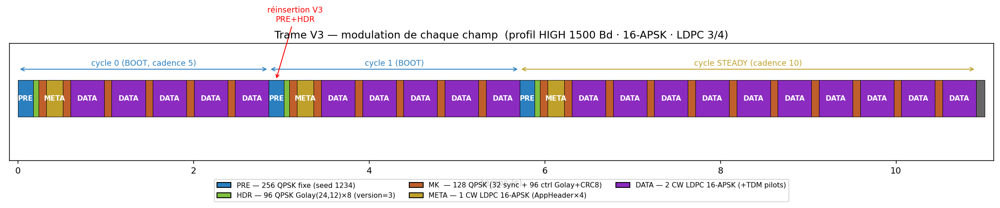
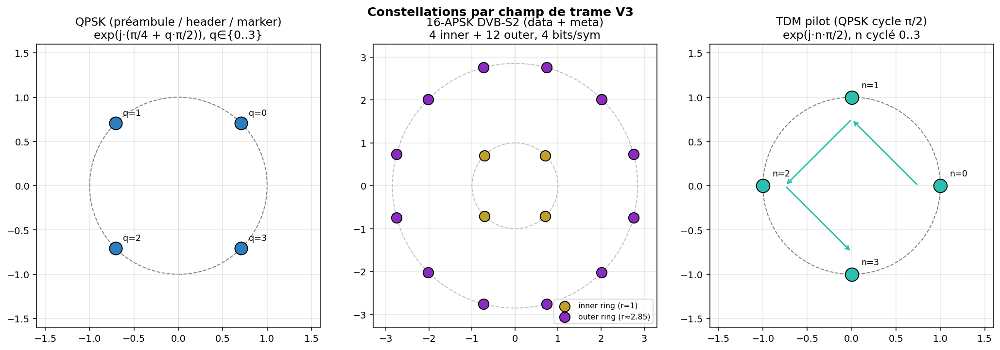
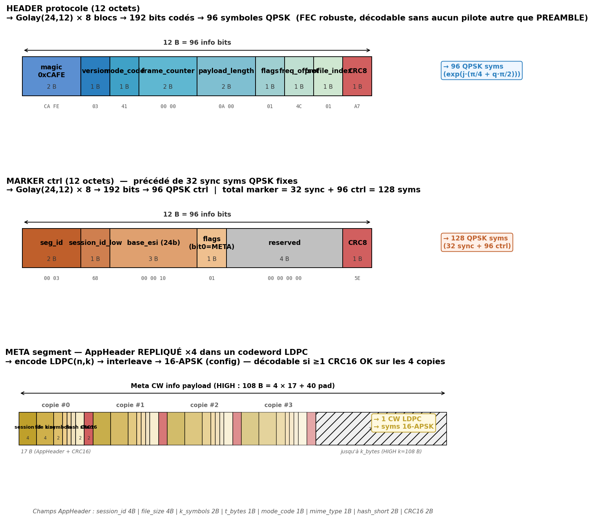
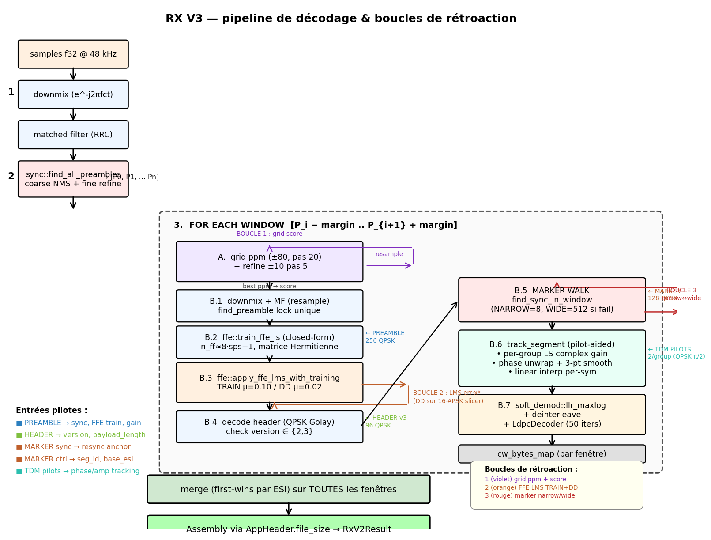
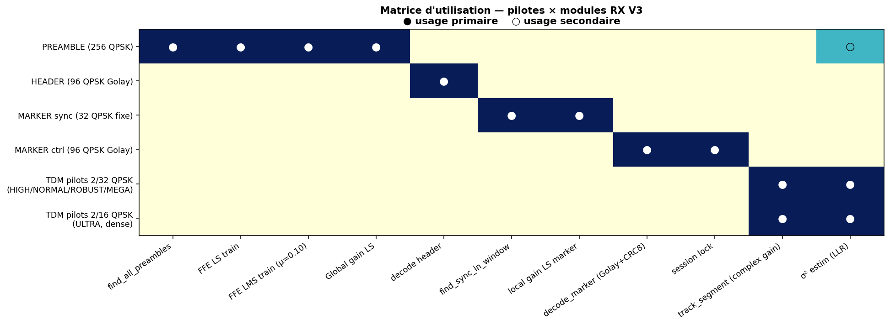
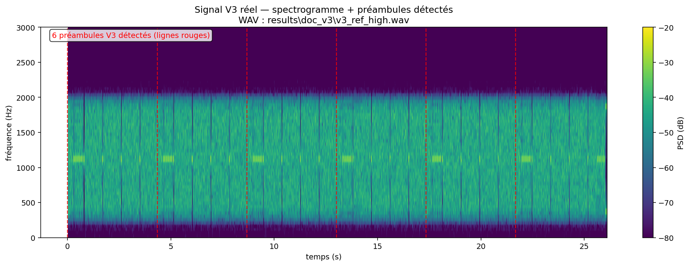
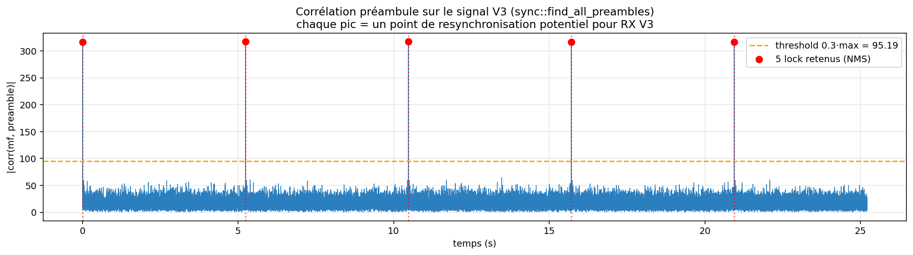
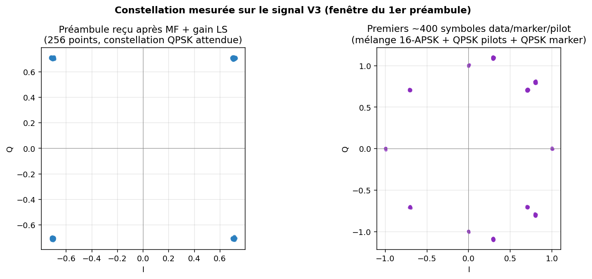

La V3 est un sur-ensemble additif de la V2 côté TX, et un
décodeur en fenêtre glissante qui réutilise rx_v2
côté RX. L'objectif est unique : late-entry et robustesse au drift long
en transmission radio OTA. Un récepteur qui démarre en milieu de flux (ou qui a
perdu la synchro) peut se raccrocher au préambule périodique suivant sans tout
rater.
La seule différence binaire entre une trame V2 et V3 est :
hdr.version = 3 (au lieu de 2),
PREAMBLE + HEADER typique
V3. Chaque couleur correspond à un champ de modulation distincte.
| Champ | Taille | Modulation | Contenu |
|---|---|---|---|
| PREAMBLE | 256 syms | QPSK fixe (seed 1234) |
Séquence déterministe connue. Utilisée pour l'acquisition et l'entraînement FFE. |
| HEADER v3 | 96 syms | QPSK Golay(24,12)×8 |
version (=3), payload_length, mode_code, flags. |
| MARKER | 128 syms | QPSK | 32 sync fixe + 96 ctrl Golay+CRC8 portant seg_id, session_id_low, base_esi, META_FLAG. |
| META segment | 1 CW LDPC | 16-APSK (LDPC 3/4) |
AppHeader répliqué 4 fois : session_id, file_size, k_symbols, t_bytes, mode, mime, hash, CRC16. |
| DATA segment | 2 CW LDPC | 16-APSK (configurable) |
Payload utile (image, fichier). Entrelacé puis décodé LDPC à la volée. |
| TDM pilots | 2 syms par groupe de 32 |
QPSK cycle π/2 |
Séquence connue continue sur tout le segment. Insérés tous les D_SYMS=32 data-syms. |
Point crucial : le symbol rate est fixe pour toute la durée
de la trame V3 (en profil HIGH : 1500 Bd). Il n'y a aucun changement de
vitesse au milieu du flux. Tous les symboles sont concaténés dans un
seul Vec<Complex64> par build_superframe_v3, puis
modulés d'un bloc (upsample, RRC, décalage à center_freq_hz).
Ce qui change d'un champ à l'autre, c'est la constellation et donc le nombre de bits par symbole :
| Champ | Constellation | bits/sym | Débit sur l'air | FEC | Débit utile |
|---|---|---|---|---|---|
| PREAMBLE | QPSK fixe | 2 | 3000 b/s | — | — (séquence connue) |
| HEADER v3 | QPSK | 2 | 3000 b/s | Golay(24,12) = rate 1/2 | 1500 b/s info |
| MARKER ctrl | QPSK | 2 | 3000 b/s | Golay(24,12) = rate 1/2 | 1500 b/s info |
| TDM pilots | QPSK cycle | 2 | 3000 b/s | — | — (séquence connue) |
| META / DATA (HIGH) | 16-APSK | 4 | 6000 b/s | LDPC rate 3/4 | 4500 b/s info |
modulator::modulate(&all_symbols,
config) traite l'ensemble.
Les autres profils varient uniquement data+meta :
| Profil | Symbol rate | Constellation data | LDPC rate | Débit utile data |
|---|---|---|---|---|
| HIGH | 1500 Bd | 16-APSK | 3/4 | 4500 b/s |
| NORMAL | 1200 Bd | 16-APSK | 2/3 | 3200 b/s |
| ROBUST | 900 Bd | 8-PSK | 1/2 | 1350 b/s |
| ULTRA | 600 Bd | QPSK | 1/2 | 600 b/s |
| MEGA (FTN) | 1600 Bd (τ=30/32) | 16-APSK | 3/4 | ~4800 b/s |
Pour chaque profil, le symbol rate est fixé à la configuration
(config.symbol_rate) — il est strictement constant durant toute
une transmission. La V3 ne change rien à cela : elle se contente d'insérer
des préambules QPSK supplémentaires, qui sortent eux aussi au même symbol rate.
┌─ MK ─┬── groupe 0 ────────┬── groupe 1 ────────┬── groupe 2 ────────┬ …
│ 128 │ 32 data │ 2 pil │ 32 data │ 2 pil │ 32 data │ 2 pil │
│ QPSK │ 16-APSK │ QPSK │ 16-APSK │ QPSK │ 16-APSK │ QPSK │
└──────┴───────────┴────────┴───────────┴────────┴───────────┴────────┘
↑ ↑
└─── LS gain complexe par groupe (2 pilots) ──→
phase unwrap → smooth → interp linéaire
appliqué sur les 32 data-syms du groupe
Constantes : D_SYMS = 32, P_SYMS = 2, cycle pilote
pilot_symbol(n) = exp(j · (n mod 4) · π/2)
(pilot.rs:11-14).


| Offset | Champ | Taille | Rôle |
|---|---|---|---|
| 0-1 | magic | 2 B | 0xCAFE, signature fixe |
| 2 | version | 1 B | 2 = V2, 3 = V3 |
| 3 | mode_code | 1 B | constellation + rate (sanity) |
| 4-5 | frame_counter | 2 B | V3 : toujours 0 |
| 6-7 | payload_length | 2 B | file_size (info basse) |
| 8 | flags | 1 B | bit 0 = FLAG_LAST (V3 : toujours 1) |
| 9 | freq_offset | 1 B | center_freq_hz / 10 |
| 10 | profile_index | 1 B | profil canonique (HIGH=1, NORMAL=2…) |
| 11 | CRC8 | 1 B | CCITT sur les 11 octets précédents |
| Offset | Champ | Taille | Rôle |
|---|---|---|---|
| 0-1 | seg_id | 2 B | compteur segment (wrap 65536) |
| 2 | session_id_low | 1 B | LSB du session_id, pour session lock |
| 3-5 | base_esi | 3 B (24 bits) | ESI du 1er codeword du segment |
| 6 | flags | 1 B | bit 0 = META_FLAG (1 = meta, 0 = data) |
| 7-10 | reserved | 4 B | 0, extensions futures |
| 11 | CRC8 | 1 B | CCITT sur les 11 octets précédents |
| Offset | Champ | Taille | Rôle |
|---|---|---|---|
| 0-3 | session_id | 4 B | 32 bits full, clé merge multi-round |
| 4-7 | file_size | 4 B | pilote l'assembly RX (truncate) |
| 8-9 | k_symbols | 2 B | RaptorQ source symbol count (phase 2.5) |
| 10 | t_bytes | 1 B | RaptorQ symbol size (table lookup) |
| 11 | mode_code | 1 B | redondance sanity du header |
| 12 | mime_type | 1 B | 0=bin, 1=text, 2=avif, 3=jpeg, 4=png |
| 13-14 | hash_short | 2 B | content hash tronqué (intégrité) |
| 15-16 | CRC16 | 2 B | CCITT-FALSE sur les 15 octets précédents |
Les 4 copies sont stockées linéairement dans l'info payload du codeword
META : [#0 17B][#1 17B][#2 17B][#3 17B][zero-pad jusqu'à k_bytes].
Pour HIGH (LDPC rate 3/4, n=1152 k=864) le k_bytes utile est
108 B, donc 68 B d'AppHeader + 40 B de zéros.
À la réception, decode_meta_payload parcourt les copies et
retourne la première dont le CRC16 valide.

[P_i − margin .. P_{i+1} +
margin] comme une transmission V2 autonome. Trois boucles de
rétroaction internes : grid ppm (violet),
FFE LMS DD (orange),
marker narrow↔wide (rouge).
| Étape RX | Fonction Rust | Élément de trame utilisé | Rôle |
|---|---|---|---|
| 1. downmix | demodulator::downmix |
— | Ramène le signal à la bande de base (e−j2πfct). |
| 2. matched filter | demodulator::matched_filter |
— | Filtre RRC (β, span=12 syms, sps). |
| 3. détection préambules | sync::find_all_preambles |
PREAMBLE | Coarse scan pas pitch, threshold 0.3·max, NMS min_sep=128·pitch, fine refine ±pitch. |
| 4.A grid ppm | rx_v2::rx_v2 |
— | Resample ±80 ppm par 20, refine ±10 par 5. Score = segs + 10·(converged/total)·total. |
| 4.B.1 find_preamble | sync::find_preamble |
PREAMBLE | Lock unique de la fenêtre courante. |
| 4.B.2 FFE LS train | ffe::train_ffe_ls |
PREAMBLE (256 syms) | Closed-form Gauss-Jordan sur matrice Hermitienne (n_ff≈8·sps+1). |
| 4.B.3 FFE LMS train+DD | ffe::apply_ffe_lms_with_training |
PREAMBLE puis slicer 16-APSK | TRAIN μ=0.10 sur préambule, puis DD μ=0.02. Boucle fermée : taps += μ·err·conj(x). |
| 4.B.4 Global gain LS | inline (rx_v2.rs:342) |
PREAMBLE | Normalise amplitude + phase résiduelle. |
| 4.B.5 decode header | header::decode_header_symbols |
HEADER | Version ∈ {2,3}, sinon fenêtre rejetée. |
| 4.B.6 marker walk | marker::find_sync_in_windowmarker::decode_marker_at |
MARKER (sync + ctrl) | Fenêtre de recherche NARROW=8 → WIDE=512 après 2 échecs consécutifs (récup. squelch). |
| 4.B.7 track_segment | rx_v2::track_segment |
TDM pilots | LS gain par groupe, phase unwrap, smooth 3-pt, interp linéaire, σ² sur résidu pilot. |
| 4.B.8 LLR + LDPC | soft_demod::llr_maxlogLdpcDecoder::decode_to_bytes |
DATA / META segments | LLR max-log, déinterleave, LDPC 50 itérations. |
| 5. merge | inline (rx_v2.rs:638-640) |
— | First-wins par ESI sur toutes les fenêtres. |
| 6. assembly | inline (rx_v2.rs:660-670) |
AppHeader.file_size | Parcours ESI 0..n_source_cw, zero-pad manquants, truncate. |
| Boucle | Portée | Variable corrigée | Signal d'erreur |
|---|---|---|---|
| grid | per-window | drift ppm (resample audio) | score_result = segs_decodés + 10·conv_frac·total |
| LMS-DD | per-symbol | taps FFE T/2 | ŝ − y (slicer 16-APSK en mode DD, μ=0.02) |
| marker | per-segment | position curseur | échecs consécutifs → élargir fenêtre de recherche |
DdPll est déclaré (pll.rs, α=0.05, β=α²/4)
mais pas actif dans track_segment : le paramètre
est _pll en underscore. Il est conservé pour la phase 3 (turbo-EQ
MEGA). Le tracking phase/amplitude actuel passe uniquement par les pilots TDM.
Le modem embarque cinq séquences connues exploitées à des échelles différentes. Certaines servent à l'acquisition (préambule), d'autres au tracking continu (pilots TDM), d'autres à la resynchronisation segment par segment (marker sync).

| Pilote | Longueur | Modulation | Usages RX principaux |
|---|---|---|---|
| PREAMBLE | 256 syms | QPSK fixe (seed 1234) |
1. find_preamble + find_all_preambles (corr NMS) 2. FFE LS-train (closed-form) 3. FFE LMS train phase (μ=0.10) 4. Global gain LS (amplitude + phase) 5. V2 fallback : estimation drift ppm |
| HEADER v3 | 96 syms | QPSK Golay(24,12)×8 | version, payload_length, mode_code, flags (fenêtre dimensionnée). |
| MARKER sync | 32 syms | QPSK fixe (32 phases hardcodées) |
1. find_sync_in_window (corrélation + NMS) 2. local gain LS (rattrape drift FFE inter-segment) |
| MARKER ctrl | 96 syms | QPSK Golay + CRC8 |
seg_id, session_id_low, base_esi, META_FLAG. Session lock → stop si session_id_low change. |
| TDM pilots | 2 syms / 32 data | QPSK cycle (0, π/2, π, 3π/2) |
1. LS gain complexe par groupe 2. phase unwrap + smooth 3-pt 3. interpolation linéaire per-sym (inv_gain) 4. σ² résidu → estime sigma² pour LLR |
Pour valider les diagrammes schématiques, les trois graphiques suivants sont produits à partir d'un vrai flux V3 généré par le CLI :
./rust/target/release/nbfm-modem.exe tx \
--input /tmp/v3_ref.bin \
--output results/doc_v3/v3_ref_high.wav \
--profile HIGH --frame-version 3 --callsign HB9TOB \
--filename v3_ref.bin
# → 10 kB payload, 25.39 s de WAV mono 48 kHz, 9 meta-cycles attendus
find_all_preambles.
Elles tombent à 0.00 s, 5.24 s, 10.47 s, 15.71 s, 20.94 s — espacement régulier
d'environ 5.23 s qui correspond exactement au cycle BOOT de cadence 5
à HIGH (5 data-segs × 2 CW × ~0.47 s + meta + preamble/header).

pitch
(scan brute-force). Les cinq pics dépassent le seuil 0.3·max et sont
conservés par la NMS (min_sep = 128·pitch) pour former la liste
positions qui pilote les fenêtres glissantes du RX V3.

track_segment applique la correction per-group,
la constellation apparaît mélangée ; l'équalisation FFE + le tracking pilote
la ramèneront à la grille 16-APSK idéale dessinée en Fig. 2.
V2_META_CADENCE_BOOT = 5).
// rust/modem-cli/src/main.rs
// TX
let symbols = if frame_version == 3 {
modem_core::frame::build_superframe_v3(&wire_payload, &config, sid, mime, hash)
} else {
modem_core::frame::build_superframe_v2(&wire_payload, &config, sid, mime, hash)
};
// RX
let decode_result = if frame_version == 3 {
modem_core::rx_v2::rx_v3(&samples, &config)
} else {
modem_core::rx_v2::rx_v2(&samples, &config)
};
Le flag --frame-version {1|2|3} sélectionne la variante à la fois
au TX et au RX. La détection est explicite en CLI, pas
auto-sniffée sur le header. Côté code de décodage, rx_v2 accepte
HEADER_VERSION_V2 || HEADER_VERSION_V3
(rx_v2.rs:362) ; il peut donc décoder le premier cycle d'un flux
V3, mais ratera les suivants faute de ré-ancrage périodique — d'où
l'existence de rx_v3.
// rust/modem-core/src/rx_v2.rs — tests module
#[test]
fn loopback_v3_high_sliding_window() {
let config = profile_high();
let data: Vec<u8> = (0..15_000)
.map(|i| (i as u32).wrapping_mul(2654435761) as u8)
.collect();
let samples = tx_v3(&data, &config, 0x1234_5678);
let result = rx_v3(&samples, &config).expect("rx_v3 returned None");
assert!(result.app_header.is_some(), "AppHeader manquant");
assert_eq!(&result.data[..data.len()], &data[..],
"V3 loopback : non bit-exact");
}
Résultat commité (ab587bc) : 76/76 blocs convergés,
70/70 codewords, bit-exact sur 15 kB @ HIGH.